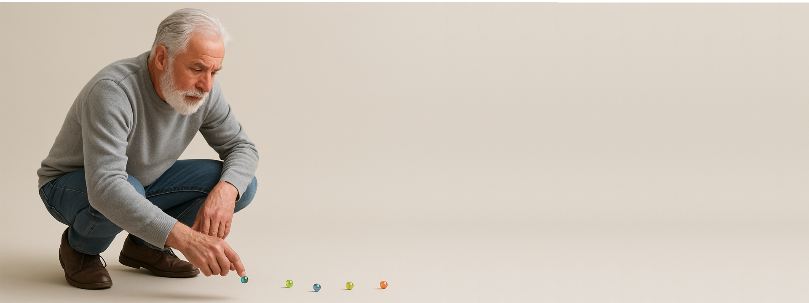

EL MALEVO DEL VIDRIO
EDMUNDO DANTES
1796 - 1826 (actualidad)
Club Deportivo La Tania – Tradición y Pasión en Movimiento
Fundado en el corazón de General Pico, el Club Deportivo La Tania se ha consolidado como un espacio de encuentro, comunidad y deporte para todas las edades. Desde sus inicios, el club ha promovido la práctica deportiva como una forma de integración social y bienestar, albergando disciplinas como fútbol, bochas, ajedrez y atletismo.
Sin embargo, el deporte por excelencia de La Tania son las Canicas, una tradición que ha trascendido generaciones y se ha convertido en sello de identidad del club siendo su máximo referente Edmundo Dantés. En sus canchas especialmente diseñadas, socios y visitantes disfrutan de competencias amistosas y torneos locales que combinan destreza, estrategia y compañerismo.
Más que un club, La Tania es un punto de encuentro para quienes valoran la historia, el juego y la amistad, manteniendo vivo el espíritu deportivo en cada partida de canicas.